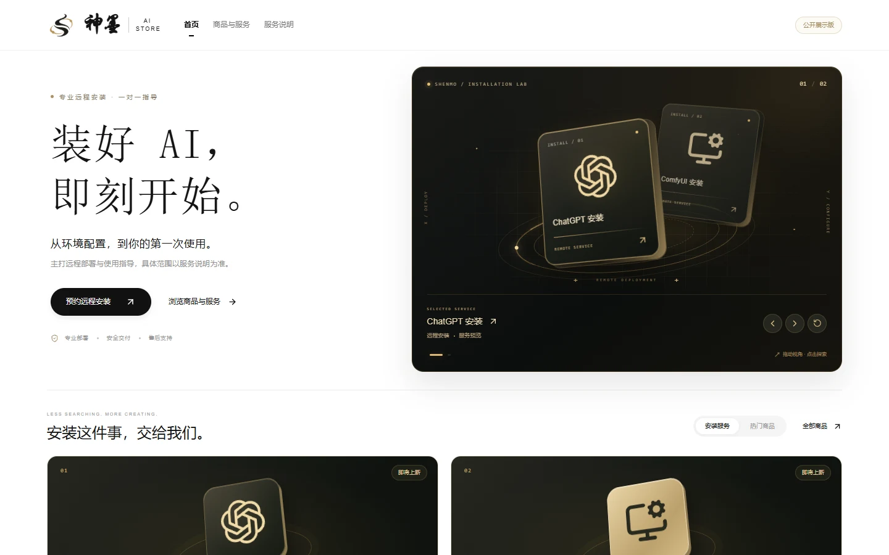

跳到主要内容
LUO-center
项目功能
GitHub
神墨
AI STORE
浏览 AI 工具与远程安装服务，体验 3D 商品展示、分类筛选和详情页。
打开互动演示
查看运行文档
演示使用静态目录快照，仅供浏览。

商城首页 · 桌面实拍
项目功能
互动演示
体验首页 3D 展示、分类浏览、搜索、价格排序和商品详情。
全栈商城
源码包含账号、订单、安装预约、售后工单和商城管理。运行需要 Workers 与 D1 环境，真实支付尚未接通。